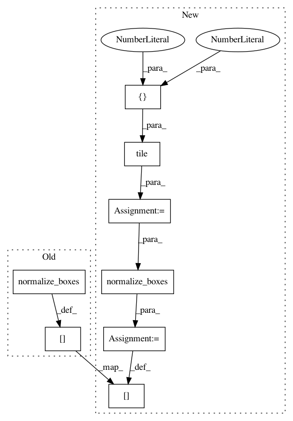

e12bd6a5e5195e158384059da3d5d47638ba12a1,official/vision/detection/dataloader/maskrcnn_parser.py,Parser,_parse_train_data,#Parser#Any#,145
Before Change
num_masks = tf.shape(masks)[0]
masks = tf.image.crop_and_resize(
tf.expand_dims(masks, axis=-1),
box_utils.normalize_boxes(boxes, tf.shape(image)[0:2]),
box_indices=tf.range(num_masks, dtype=tf.int32),
crop_size=[self._mask_crop_size, self._mask_crop_size],
method="bilinear")
masks = tf.squeeze(masks, axis=-1)
// Assigns anchor targets.
// Note that after the target assignment, box targets are absolute pixel
// offsets w.r.t. the scaled image.
input_anchor = anchor.Anchor(
self._min_level,
self._max_level,
self._num_scales,
self._aspect_ratios,
self._anchor_size,
(image_height, image_width))
anchor_labeler = anchor.RpnAnchorLabeler(
input_anchor,
self._rpn_match_threshold,
self._rpn_unmatched_threshold,
self._rpn_batch_size_per_im,
self._rpn_fg_fraction)
rpn_score_targets, rpn_box_targets = anchor_labeler.label_anchors(
boxes, tf.cast(tf.expand_dims(classes, axis=-1), dtype=tf.float32))
// If bfloat16 is used, casts input image to tf.bfloat16.
if self._use_bfloat16:
image = tf.cast(image, dtype=tf.bfloat16)
// Packs labels for model_fn outputs.
labels = {
"anchor_boxes": input_anchor.multilevel_boxes,
"image_info": image_info,
"rpn_score_targets": rpn_score_targets,
"rpn_box_targets": rpn_box_targets,
}
labels["gt_boxes"] = input_utils.pad_to_fixed_size(
boxes, self._max_num_instances, -1)
labels["gt_classes"] = input_utils.pad_to_fixed_size(
classes, self._max_num_instances, -1)
if self._include_mask:
labels["gt_masks"] = input_utils.pad_to_fixed_size(
masks, self._max_num_instances, -1)
return image, labels
After Change
classes = tf.gather(classes, indices)
if self._include_mask:
masks = tf.gather(masks, indices)
cropped_boxes = boxes + tf.cast(
tf.tile(tf.expand_dims(offset, axis=0), [1, 2]), dtype=tf.float32)
cropped_boxes = box_utils.normalize_boxes(
cropped_boxes, image_info[1, :])
num_masks = tf.shape(masks)[0]
masks = tf.image.crop_and_resize(
tf.expand_dims(masks, axis=-1),
cropped_boxes,
box_indices=tf.range(num_masks, dtype=tf.int32),
crop_size=[self._mask_crop_size, self._mask_crop_size],
method="bilinear")
masks = tf.squeeze(masks, axis=-1)
// Assigns anchor targets.
// Note that after the target assignment, box targets are absolute pixel
// offsets w.r.t. the scaled image.
input_anchor = anchor.Anchor(
self._min_level,
self._max_level,
self._num_scales,
self._aspect_ratios,
self._anchor_size,
(image_height, image_width))
anchor_labeler = anchor.RpnAnchorLabeler(
input_anchor,
self._rpn_match_threshold,
self._rpn_unmatched_threshold,
self._rpn_batch_size_per_im,
self._rpn_fg_fraction)
rpn_score_targets, rpn_box_targets = anchor_labeler.label_anchors(
boxes, tf.cast(tf.expand_dims(classes, axis=-1), dtype=tf.float32))
// If bfloat16 is used, casts input image to tf.bfloat16.
if self._use_bfloat16:
image = tf.cast(image, dtype=tf.bfloat16)
// Packs labels for model_fn outputs.
labels = {
"anchor_boxes": input_anchor.multilevel_boxes,
"image_info": image_info,
"rpn_score_targets": rpn_score_targets,
"rpn_box_targets": rpn_box_targets,
}
labels["gt_boxes"] = input_utils.pad_to_fixed_size(
boxes, self._max_num_instances, -1)
labels["gt_classes"] = input_utils.pad_to_fixed_size(
classes, self._max_num_instances, -1)
if self._include_mask:
labels["gt_masks"] = input_utils.pad_to_fixed_size(
masks, self._max_num_instances, -1)
return image, labels
In pattern: SUPERPATTERN
Frequency: 3
Non-data size: 8
Instances
Project Name: tensorflow/models
Commit Name: e12bd6a5e5195e158384059da3d5d47638ba12a1
Time: 2019-11-01
Author: pengchong@google.com
File Name: official/vision/detection/dataloader/maskrcnn_parser.py
Class Name: Parser
Method Name: _parse_train_data
Project Name: tensorflow/tpu
Commit Name: bbb9f33e7f2e964a55e5509b8610a660f4615fd9
Time: 2019-12-05
Author: pengchong@google.com
File Name: models/official/detection/dataloader/maskrcnn_parser.py
Class Name: Parser
Method Name: _parse_train_data
Project Name: tensorflow/tpu
Commit Name: 11b0078497d44560e1528343b6744451b3400928
Time: 2019-11-01
Author: pengchong@google.com
File Name: models/official/detection/dataloader/maskrcnn_parser.py
Class Name: Parser
Method Name: _parse_train_data